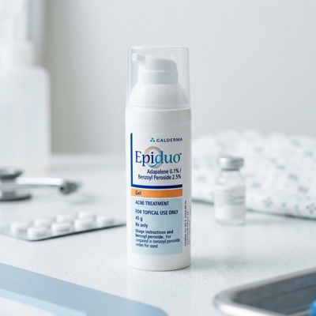
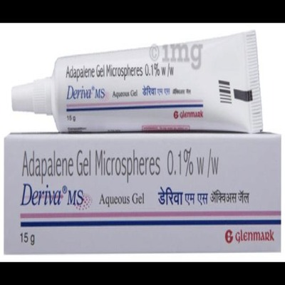
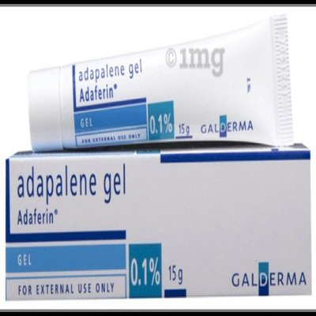
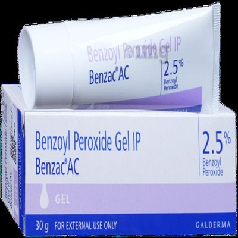

Combining Adapalene 0.1% with Benzoyl Peroxide 2.5%, Epiduo is one of the most effective prescription acne gels in India. However, improper use causes intense redness, stinging, and ruined skin barriers. Here is how to use it safely with the doctor-recommended sandwich method.
Consultant Dermatologist & Acne Specialist
Epiduo combines a third-generation retinoid with an oxygenating antibacterial agent[1]. To clear stubborn comedones and cysts without peeling, follow these four foundational rules:
Acne has multiple causes: sticky pore lining, excess oil, bacterial overgrowth, and inflammation. Single active ingredients often leave one or two pathways unchecked.
Adapalene binds specifically to nuclear retinoic acid receptors (RAR-beta and RAR-gamma) in the epidermis. It normalizes keratinocyte differentiation, ensuring dead cells do not stick together to form blackheads or closed comedones[3].
Benzoyl peroxide penetrates sebum follicles and decomposes into benzoic acid and oxygen free radicals. Because it kills bacteria through oxidative stress rather than metabolic disruption, acne bacteria can never develop resistance to it[4].
By thinning the outer compacted stratum corneum, Adapalene helps Benzoyl Peroxide travel deeper into infected pores. Clinical trials show this fixed combination achieves up to 50% faster lesion reduction than using either active alone[1].
Indian skin is rich in melanin, meaning skin irritation quickly turns into dark brown post-inflammatory hyperpigmentation (PIH). Follow these rules to protect your face.
Never dollop generous amounts onto pimples. Epiduo is a preventative treatment intended to treat the entire acne-prone field, not a spot treatment. One single green-pea drop contains enough active molecules to cover your forehead, both cheeks, and chin evenly.
Damp skin absorbs topical actives up to 5 times faster than dry skin, concentrating the drug too quickly and causing intense burning. After cleansing, wait at least 15 to 20 minutes until your skin is bone dry before touching Epiduo.
The skin under your eyes, around the corners of your nose (nasolabial folds), and around your lips is paper-thin. Epiduo naturally migrates across facial warmth. Apply plain petrolatum or a barrier balm to these areas before spreading the gel.
If your skin stings, turns red, or peels easily, the sandwich technique cushions active delivery without weakening acne-clearing efficacy[5]:
Rushing into everyday use is the single biggest reason people quit Epiduo after 10 days. Introduce the medication gradually over 8 weeks.
Apply Epiduo to clean, dry skin. Leave it on for 30 minutes to 1 hour, then rinse it off completely with plain water. Follow with moisturizer. Do this every 3rd evening. Your skin receives therapeutic benefits with minimal irritation.
Leave Epiduo on overnight using the sandwich technique (Moisturizer -> Epiduo -> Moisturizer). Apply every alternate evening (Monday, Wednesday, Friday). Take rest nights focused purely on hydration.
If your face shows zero redness or peeling, apply Epiduo over dry moisturizer every evening. If winter dryness or travel causes tightness, step back down to alternate nights immediately.
Learn how to identify normal retinoid adjustment, recognize when your skin barrier needs emergency rest, and prevent bleached fabrics.
Because Adapalene speeds up cellular renewal, underlying micro-comedones that were already developing will surface as small whiteheads faster.
Benzoyl peroxide is a potent bleaching agent. It will permanently bleach colored pillowcases, towels, and shirt collars. Always wash your hands thoroughly with soap after applying Epiduo, use plain white pillowcases, and sleep with white sleepwear.
Here are authentic packshots, active ingredient specifications, and current retail pricing across Indian pharmacies.

Original Swiss Galderma formulation combining micro-milled Adapalene 0.1% with Benzoyl Peroxide 2.5% in an aqueous gel vehicle.

High-quality Indian bioequivalent generic containing Adapalene 0.1% and Benzoyl Peroxide 2.5% at a fraction of the cost.

Adapalene 0.1% alone without Benzoyl Peroxide. Ideal if your skin cannot tolerate BPO or if your acne is strictly non-inflammatory blackheads.

Benzoyl Peroxide 2.5% in Acrylates Copolymer beads that absorb excess facial sebum while delivering antibacterial oxygen.
Board-certified dermatologist Dr. Dray discusses why so many patients experience severe irritation with Epiduo Gel and how to use it safely.
Video by Dr. Dray | Board-Certified Dermatologist
Select your current experience with acne topicals to see your tailored dermatologist regimen:
Do not leave Epiduo on overnight right away. Apply one pea to clean, dry skin every 3rd evening. Leave it on for 45 minutes, rinse off with plain water, and follow with moisturizer. Progress to overnight sandwiching only after 2 weeks of zero redness.
Your skin barrier has suffered micro-damage. Stop Epiduo immediately for 5 to 7 days. Cleanse with a non-foaming hydrating wash (like CeraVe or Cetaphil) and apply ceramide creams twice daily. Once all stinging subsides, resume with the sandwich technique twice a week only.
Your barrier is successfully retinized. Continue applying one pea size over your light evening moisturizer every night. Protect your newly revealed skin cells by wearing broad-spectrum SPF 50 sunscreen every single morning without fail.
Clear, doctor-reviewed answers to common questions about Epiduo Gel in India.
Scan your face in 10 seconds. Our AI dermatological screening pinpoints barrier damage, hydration deficit, and comedone patterns instantly.
Scan Your Skin (Free)